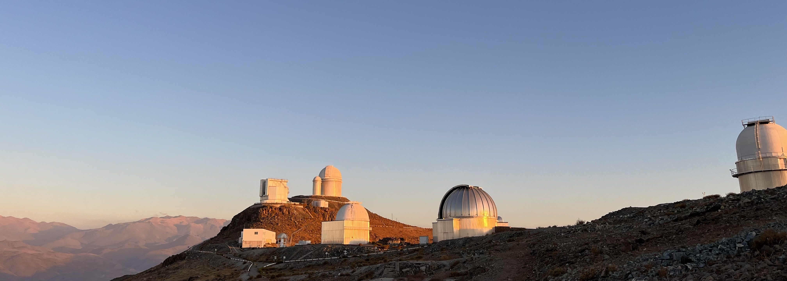

Hi! I'm Adam, a postdoctoral researcher studying exoplanets at the University of Birmingham. I spend my time trying to detect and characterise planets in binary systems, through developing our understanding of the stars hosting these 'tatooine-like' worlds. I analyse spectrosopic data from facilities such as HARPS, SOPHIE, and ESPRESSO to search for exoplanets, and to determine the fundamental parameters of stars.
I did my undergraduate degree at the University of Glasgow (graduating 2021), my PhD at The Open University (viva'd in 2025), and now work at the University of Birmingham (see more by clicking the 'CV' button in the menu bar).
The projects I am involved in and my publications can be found in the sections below.
a.t.stevenson@bham.ac.uk
Sun, Stars and Exoplanets group
University of Birmingham
Edgbaston
UK